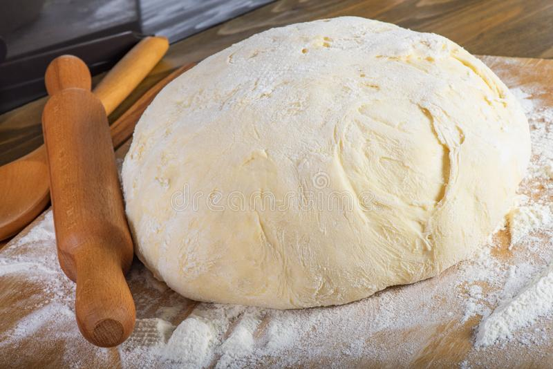
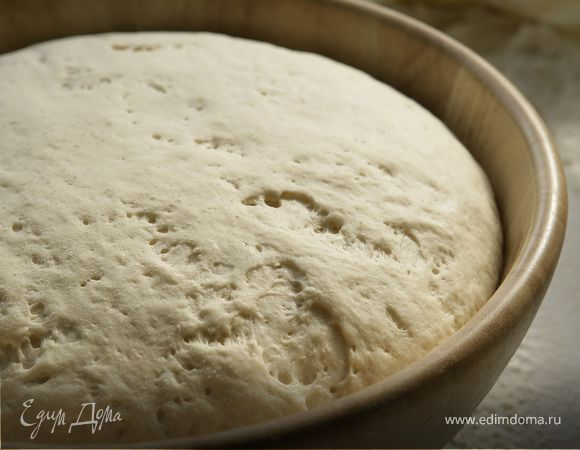

Как сделать тесто для хлеба

- нужна мука 150 грамм
- нужно сухие дрожжи 11 грамм или 1-2 ч. ложки
- вода (на глаз)
- растительное масло 1-2 ч. ложки
- Соль-сахар(не обязательно)
перемешиваем и должно получится липкое тесто и конечно
перемешиваем тесто руками 30 минут...
Отлично!
Теперь лепим шар и обязательно протераем руки маслом (чтоб не липло) и кладем шар в миску (любую) и убираем в теплое место чтобы тесто настоялось 5 мин.

После того как тесто настоялось достаем шар и хорошо перемешиваем и кладем заного в теплое место на 20 мин.
Готово!
Тесто готово!!